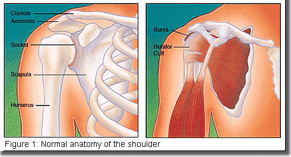
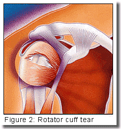
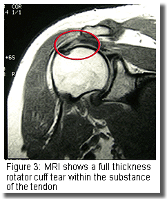
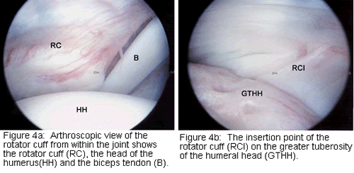
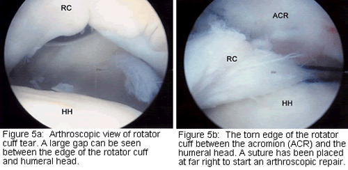

Description
Rotator cuff tear is a common cause of pain and disability in the adult population. The rotator cuff is made up of four muscles and their tendons. These combine to form a "cuff" over the upper end of the arm (head of the humerus). The four muscles - supraspinatus, infraspinatus, subscapularis, and teres minor - originate from the "wing bone"(scapula), and together form a single tendon unit. This inserts on the greater tuberosity of the humerus. The rotator cuff helps to lift and rotate the arm and to stabilize the ball of the shoulder within the joint.
Most tears occur in the supraspinatus but other parts of the tendon may be involved
. 
Risk Factors/Prevention
Rotator cuff tear is most common in people who are over the age of 40. It may occur in younger patients following acute trauma or repetitive overhead work or sports activity.
Common examples are:
• Workers who do overhead activities such as painting, stocking shelves or construction
• Athletes such as swimmers, pitchers and tennis players
A cuff tear may also happen with another injury to the shoulder, such as a fracture or dislocation.
Symptoms
Symptoms of a rotator cuff tear may develop acutely or have a more gradual onset. Acute pain usually follows trauma such as a lifting injury or a fall on the affected arm. More commonly, the onset is gradual and may be caused by repetitive overhead activity or by wear and degeneration of the tendon. You may feel pain in the front of your shoulder that radiates down the side of your arm. At first the pain may be mild and only present with overhead activities such as reaching or lifting. It may be relieved by over-the-counter medication such as aspirin or ibuprofen. Over time the pain may become noticeable at rest or with no activity at all. There may be pain when you lie on the affected side and at night. Other symptoms may include stiffness and loss of motion. You may have difficulty using your arm to reach overhead to comb your hair or difficulty placing your arm behind your back to fasten a button.
When the tear occurs with an injury, there may be sudden acute pain, a snapping sensation and an immediate weakness of the arm.
Diagnosis
Diagnosis of a rotator cuff tear is based on your symptoms, your doctor's examination, X-rays, and imaging studies such as MRI (magnetic resonance imaging). Your doctor will examine your shoulder to see if it is tender in any area or if there is a deformity. He or she will measure the range of motion of your shoulder in several different directions and test the strength of your arm. The doctor will also check for instability and problems with the AC (acromioclavicular) joint.
The doctor may also examine your neck to make sure that your pain is not coming from a "pinched nerve" in your cervical spine and to rule out other conditions such as osteoarthritis or rheumatoid arthritis.
Some of the signs of a rotator cuff tear include:
• Atrophy or thinning of the muscles about the shoulder
• Pain when you lift your arm
• Pain when you lower your arm from a fully raised position
• Weakness when you lift or rotate your arm
• Crepitus or crackling sensation when you move your shoulder in certain positions
Plain X-rays of a shoulder with a rotator cuff tear are usually normal or show a small spur. For this reason, your doctor may order an additional study such as an ultrasound or MRI. These can better visualize soft tissue structures such as the rotator cuff tendon.
An MRI can sometimes distinguish between a full thickness (complete) tear of the tendon and a partial tear. It can show the doctor if the tear is within the tendon itself, or if the tendon is detached from bone.
In some circumstances, an Arthrogram, in which local anaesthetic and dye is injected into the joint, may also be helpful.

Treatment Options
Once a diagnosis of rotator cuff tear has been made, your orthopaedic surgeon will recommend the most effective treatment. In many instances, non-surgical treatment can provide pain relief and can improve the function of your shoulder.
Treatment options may include:
• Rest and limited overhead activity
• Use of a sling
• Anti-inflammatory medication
• Steroid injection
• Strengthening exercise and physical therapy
It may take several weeks or months to restore the strength and mobility to your shoulder.
Treatment Options: Surgical
Your orthopaedic surgeon may recommend surgery if nonoperative treatment does not relieve your symptoms. Surgery may also be considered if the tear is acute and painful, if it is the dominant arm of an active individual or if you need maximum strength in your arm for overhead work or sports.
The type of surgery performed depends on the size, shape and location of the tear. A partial tear may require only a trimming or smoothing procedure called a "debridement." A complete tear within the substance of the tendon is repaired by suturing the two sides of the tendon. If the tendon is torn from its insertion on the greater tuberosity of the humerus, it can be repaired directly to bone.
Many surgical repairs can be done on an outpatient basis.
In the operating room, your surgeon may remove part of the front portion of the scapula, the acromion as part of the procedure. The acromion is thought to cause "impingement" on the tendon. This may lead to a tear. Other conditions such as arthritis of the AC joint or tearing of the biceps tendon may also be addressed.
In general, three approaches are available for surgical repair.
These include:
Arthroscopic Repair
A fiberoptic scope and small instruments are inserted through small puncture wounds instead of an open incision. The scope is connected to a television monitor and the surgeon can perform the repair under video control.
Mini-Open Repair
Newer techniques and instruments allow surgeons to perform a complete rotator cuff repair through a small incision, typically 4 cm to 6 cm.
Open Surgical Repair
A traditional open surgical incision is often required if the tear is large or complex or if additional reconstruction such as a tendon transfer has to be done. In some severe cases, where arthritis has developed, shoulder replacement is an option.
Your surgeon will recommend which technique is best for you.


Rehabilitation
After surgery, the arm is immobilized to allow the tear to heal. The length of immobilization depends upon the severity of the tear. You will be given an exercise program to help regain motion and strength in the shoulder. This begins with passive motion. It advances to active and resistive exercises. Your orthopaedic surgeon may recommend that you work with a physical therapist. Complete recovery may take several months.
A strong commitment to rehabilitation is important to achieve a good surgical outcome. The doctor will advise you when it is safe to return to overhead work and sports activity.
Research on the Horizon/What's New?
Future developments in the treatment of rotator cuff disease include newer arthroscopic and mini-open surgical techniques. These allow for smaller, less painful incisions and faster recovery time. Many techniques now use dissolvable anchors. These hold stitches in place or hold stitches down to bone until the repair has healed and then are absorbed by the body. Research is also being done on "orthobiologic" tissue implants. These promote growth of new tissue in the body, and help with the healing process.
Source: American Academy of Orthopaedic Surgeons